The culmination of my efforts in Informatics 360: Design Thinking have materialized into a mobile application named Prism. The process I went through this quarter in order to create Prism with my team was a unique creative process. The two individuals who joined me in this journey were Austin Hutchinson and Jon Shilling. I will illustrate this process I went through on this team, from beginning to end, detailing the steps I took that contributed to the overall group's success.
Prism is a mobile application dedicated to connecting students of different majors. The modern educational system often divides subjects into departments that have limited interaction with one another, making it difficult for students to form connections with students of different majors. Prism steps in to act as a way for students to find help on real world projects.
During college, students are often trying to improve their skills instead of make a little extra money, which is why Prism is a moneyless system. Concurrently, there are students with great, new ideas that do not have the financial resources or skills to see these ideas through to the finish. We put the focus on personal and team growth instead of profits, and letting these two types of people find each other in a world where they are often separated.
But how did Prism grow into what it is today? When we could have created anything, why exactly did we choose to create the application we did, and how did we reach our point of completion? These questions will be answered, as I will show the stages of the process, and our reasoning behind all decisions or changes we made in these stages.
Let us look to the origins of this project. Prism was not created out of an epiphany, but rather a long process to identify an information problem that exists in the world we live in. We realized that students often lack methods to connect to other students, especially those they do not have classes with.
We began by trying to identify an area in society that had an information problem. Our ideas ranged greatly; from an application that recommended when to drink coffee during the day, to a way to visualize your college social connections, we wanted to choose something that affected a lot of people that we could make a significant impact on.
One of the final information problems of our original brainstorm session came from me. It was that students only have classes within their major, meaning that classes are not representative of other majors and skills. Since real world companies have so many different roles and skill requirements, this seemed like a contradiction within our education system. How can we connect these separated students? This is the question we needed to design a solution for.
In order to answer this question, we needed to pinpoint exactly where the problem came from. This required us to put ourselves in the shoes of different actors and understand why they made the actions they did. And from these actions, we had to identify the cause and effect of them, and if there inefficencies involved that we could solve. After drawing out the map shown below, we were able to pinpoint our problem as follows:
Students find it difficult to get help from students outside their major on real world projects. Unlike class assignments (which are tailored to test a very specific skill taught in that class), projects in the real world require skills in a variety of areas in order to succeed. Often times, students of a certain major may have a fraction of the skills required to complete a project they imagine, but they may struggle to find others with the skills they don’t have.
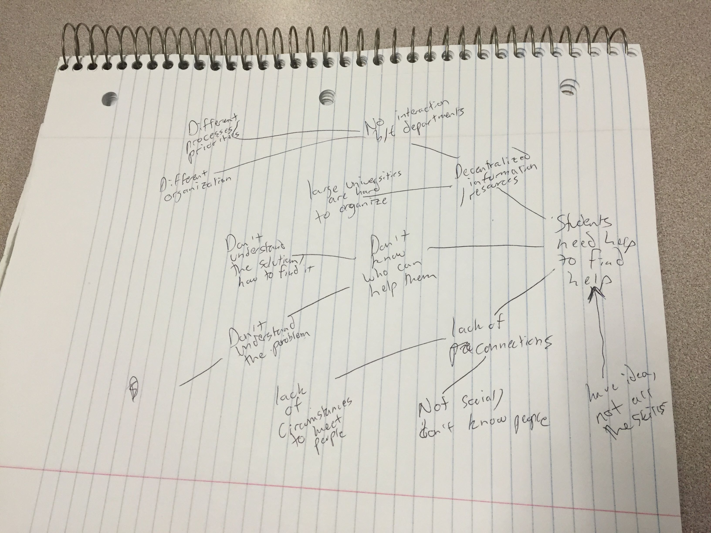
Our design process began with the 40 ideas exercise. We were required to come up with 40 original, unique ways to solve the specific information problem we expressed above. About halfway through, I reached what I thought was a dead end. I believed I had identified all traditional system, which required me to stretch beyond the ordinary, coming up with ideas such as "Moving the dorms closer together." This exercise required creativity and encouraged us to think outside the box
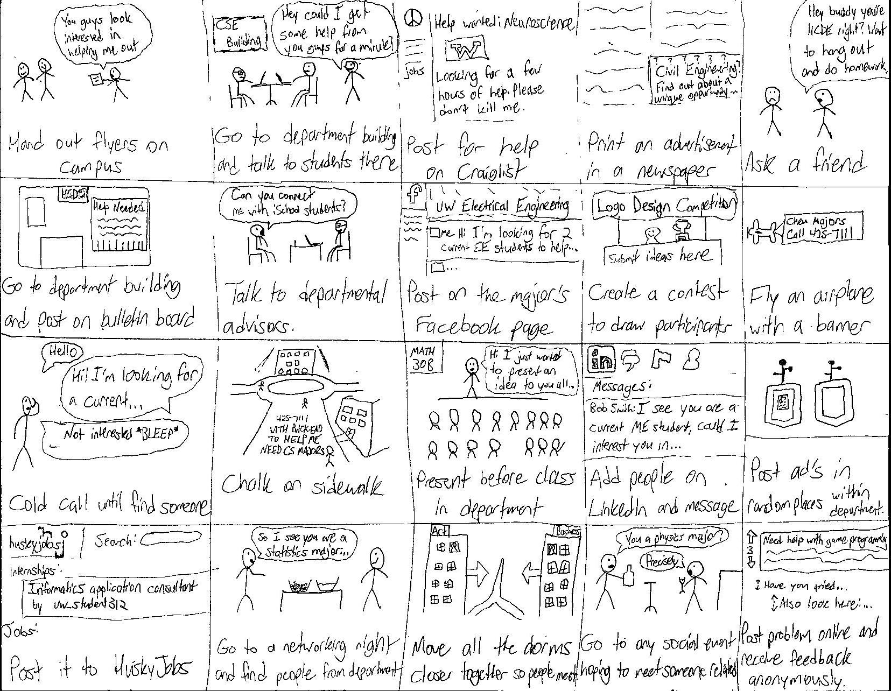
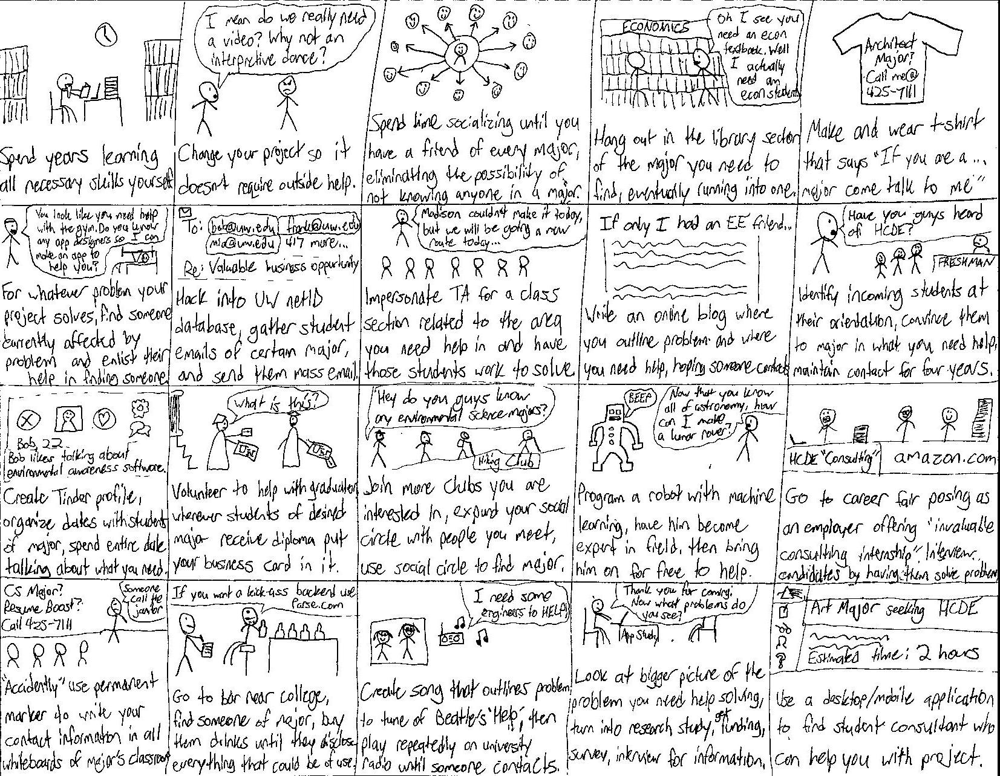
Surprisingly, this didn't just provide the one solution we would end up choosing, but showed what competition our application would have in the existing world today. This was a good thing because it inspired us to create an application that offered something these other 39 ideas didn't. We needed something that hadn't been imagined before or had something that couldn't be replicated by another group of developers.
We began conceptualizing the application we were going to make. Although we had imagined a mobile application from the beginning, we had never really got into the details until this step of the process. Our team used Google Drive to store all of our individual and group components, as it is a cloud-based location that would be accessible by all of us.
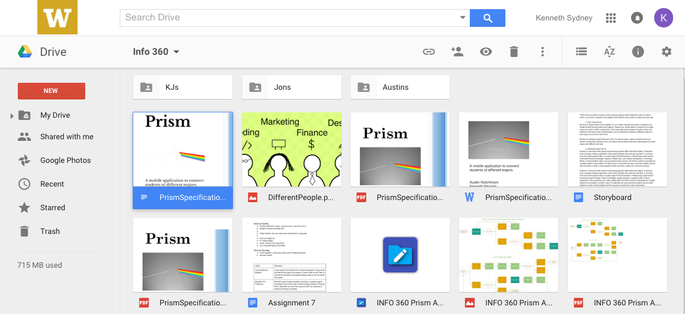
To get feedback from our interviews, we then began conducting interviews. I graciously received feedback from Jason Kinsfather and Jonathan Li. You can see the script I used to conduct these interviews below. I considered it to be a semi-structured interview so that if the interviewee saw a major problem they would be able to elaborate on it.
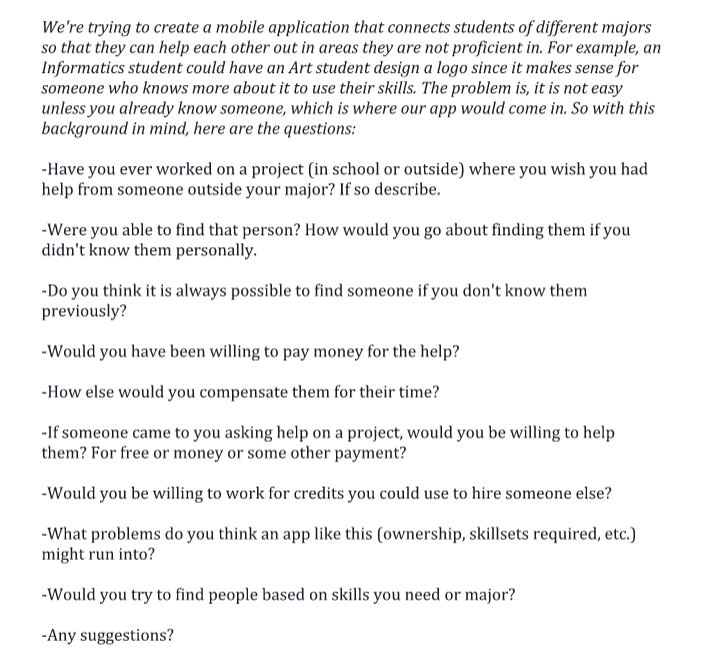
The feedback we received from both reinforced the idea that Prism should be altruistic instead of capitalistic. They also brought up several valid points: Why can't students use Facebook to accomplish the same thing? How would projects taking a large amount of time and a small amount of time be differentiated? Would the app only be available to students?
After deciding on the mobile application, we began making our low fidelity prototypes. These would be used to construct the basic user flow and content of the pages within the application, even though they were heavily modified later. This made many abstract details more concrete. We decided to use a bulletin board system where registered users submit text posts looking for help. This would make each oppurtunity a separate entity, able to be browsed, organized, and bookmarked by users. My prototype is shown below.
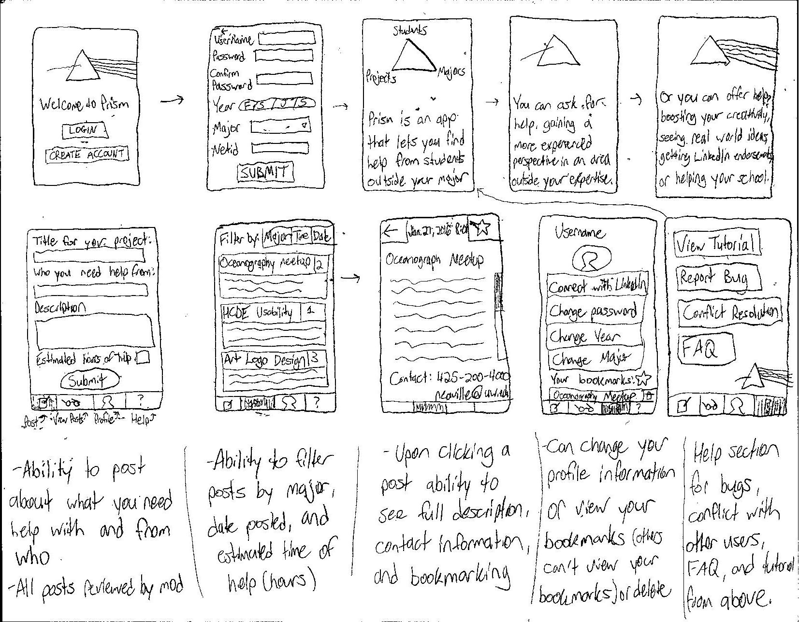
We then went into additional interviews to gain feedback on our initial designs. This time, we had a visual way to show what our idea was instead of just describing it. I interviewed Jason once again, and Bryce Colton. I figured having a someone totally new to Prism and someone who heard our original pitch would increase our chances of receiving different feedback from both.
Having the ability to walk the interviewee through the actual user flow of the application allowed them to bring up an even deeper level of concerns. How would the deletion of posts work? What sorting algorithms for posts would we implement? What legal boundries must we consider in account creation? Although the interviews brought up some of these questions, the process of conducting interviews and explaining the flow to someone else repeatedly actually made me realize questions we had not yet answered.
It was then that we began to construct our high fidelity prototypes. I was amazed by the level of detail that went into these creations, as every object within a page had a color, size, placement, and function that needed to be rationalized. This was something that felt very intrinsic, something that could easily not be taught in school. My group had to consider the feel of the application and make sure we were all on the same page. Just like when you draw in a coloring book, there was no right answers to the decisions we made.
Occassionally there were miscommunications on what our application was. Austin had imagined Meetups more as seminars, Jon imagined them as long-term work experience, and I imagined them more as consulting meetings for short periods of time. We carefully considered the pros and cons of each in one of our meetings, and decided to accomodate both seminars and consultant-style meetings. We ruled on long-term involvment because for these more serious, involved roles there would be other means by which projects would recruit members.
Keeping all three of our independent low-fidelity prototypes in mind, I created the online mockups that would become our high-fidelity prototypes. I created a view of each screen, and even multiple views within the screen (such as when a collapseable menu is opened). Once we had all the screens in place, we drew the mappings and navigation between the various screens. In hindsight, it would have been easier to draw out the mapping before the screen views were generated so that we could include the appropriate ways to navigate to all required pages within the screen.
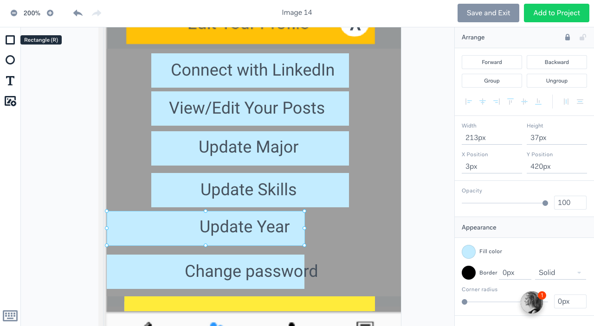
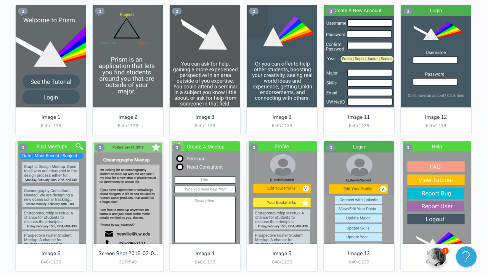
After this step it was finally time to begin with the the first draft of the Design Specification. This would be a comprehensive document specifying all necessary design decisions, so that if given to a developer he could create exactly what we wanted. We divided up the work into three sections, and reviewed all the work we had done so far in order to create a high level deliverable.
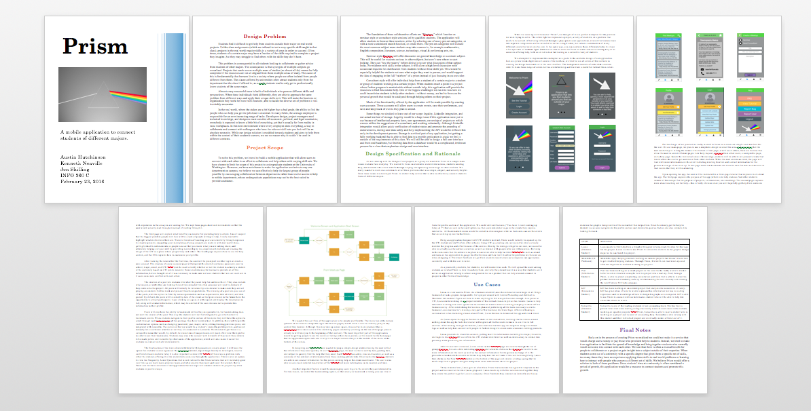
When we finished the initial draft, we knew we were far from finished. The heuristic evaluation exposed this especially, as we were forced to identify flaws in our own creation. Previously we had worried most about the aesthetics of the application, but the ten usability heurisitics brought up issues in the areas such as functionality, consistency, and flexibility. This forced us to face things we had previously only assumed to be or had not yet communicated explicitly.
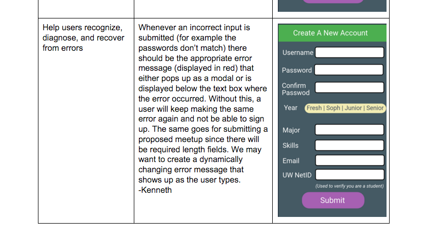
We knew we were slowly making progress, however. With our biweekly class meetings, we were able to further expand Prism in areas that were underdeveloped or wrongly conceived. But design considerations were not only envisioned during these meetings, I found myself pondering questions about Prism during random times of the day during the past couple months. Especially when browsing the apps on my iPhone I noticed I gave a lot more attention to the UI and UX than ever before, even considering if features present in these apps would be appropriate for Prism.
We then wanted to create a video to show off exactly what Prism was. This required a completely different set of skills (which we even joked Prism could have helped us find us a student with video skills), but the end product turned out nicely. I acted as the main character of our use case scenario.
We wrote out a video script, specifying what exactly we would be filming. We wanted to explain the problem we identified, then present a use case in which a student user of Prism would have that problem solved.
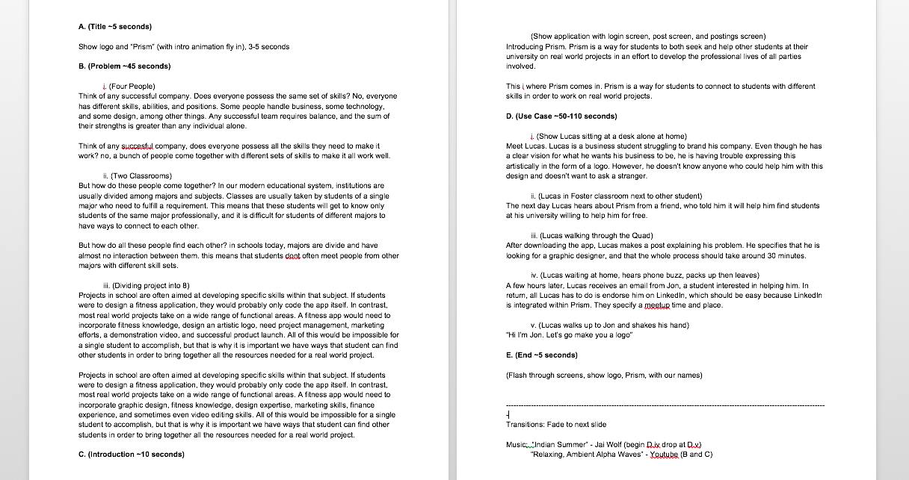
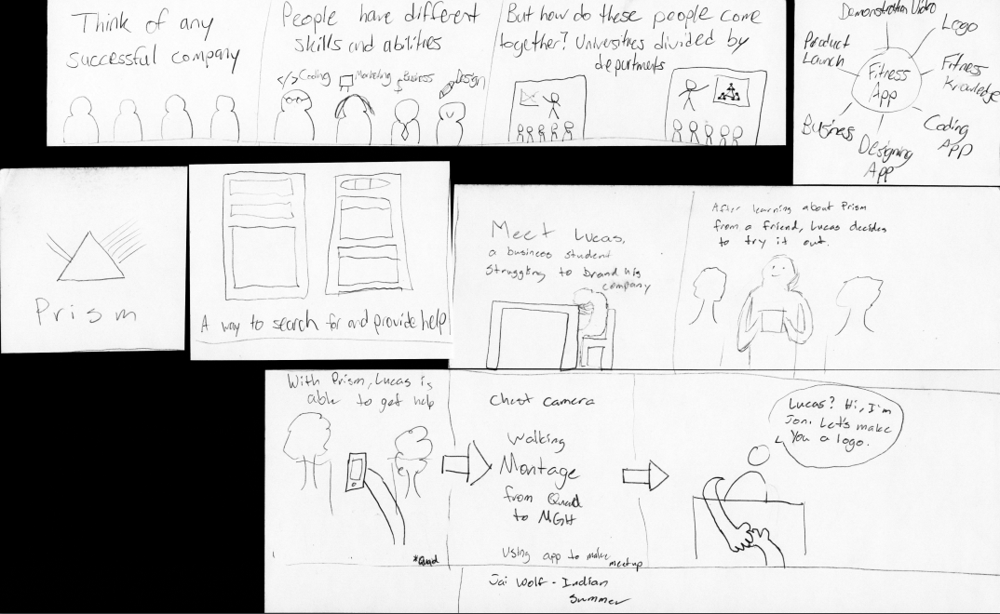
One thing that really helped our group was my ability to manipulate audio. When it was difficult to hear the music we added at the same time as the spoken words, I lowered the middle frequencies of the song to allow the voice to take over the middle frequencies. Just as Prism seeks to aid with, this project required a diverse set of skills that we never anticipated needing from the beginning.
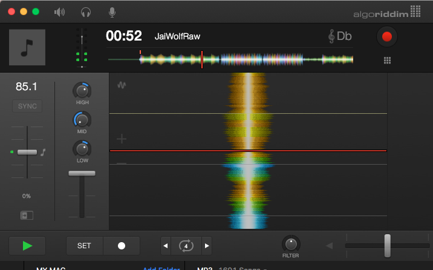
Our Final Video:
After this we finalized the Design Specification. I think the video gave us the creative energy to further detail this application we had created a whole video to market and shown the successful application of. Whereas the first draft of this specification was more of the combination of our assigned parts, we went fully through this final draft multiple times as a team to ensure meeting all criteria.
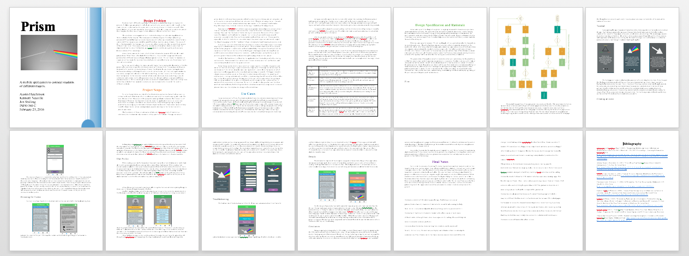
Overall, this was the process I went through in order to help create Prism. Having never created a mobile application of this magnitude from the beginning, this design process taught me many lessons on the design process itself. We often ran into complexities that only revealed more complexities. I believe we achieved our objective for this design solution by having an agreed goal, empathy for our user, members holding each other accountable and clear communication. Whether or not we choose to continue the development of Prism, I have gained innumerable skills on the execution of a real world project. Since many say that your first idea is not your best idea, I look forward to applying the lessons from this class to future ideas I will have.